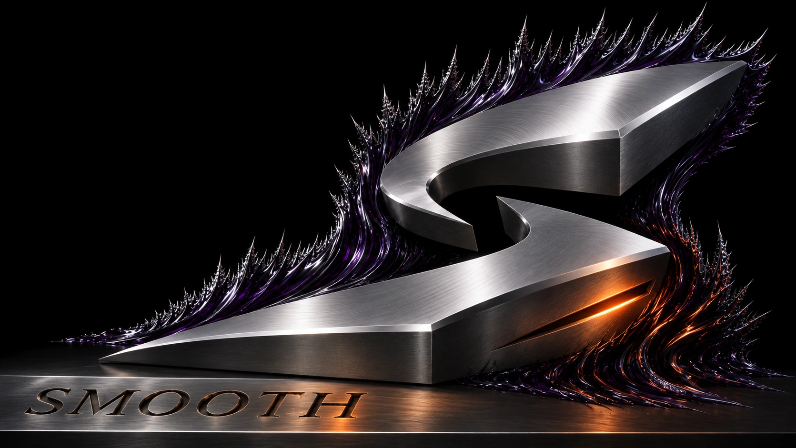

Engenharia de rotas para jogos
A rota é parte
do jogo.

O Smooth compara a rota atual com alternativas e só troca quando a medição justifica.
Explore o Smooth.
Diagnóstico da rede
O ping médio
esconde picos.
Uma sessão estável depende da regularidade da conexão. O Smooth mede a rede separadamente do atraso de renderização e de entrada.
Como o Smooth mede
Medir antes
de intervir.
Comparar
A rota atual é a referência para testar alternativas em condições equivalentes.
Decidir
O Smooth considera uma troca quando há ganho verificável dentro dos limites de estabilidade.
Explicar
O resultado mostra o que foi medido e por que a rota foi mantida, trocada ou declarada inconclusiva.
Cobertura
Cada combinação exige teste.
A cobertura depende do jogo, da região e da versão do Windows. A matriz comercial está em validação.
Verificar configuraçãoOferta fechada
Acesso por coorte
A abertura depende de benefício demonstrado, cobertura homologada e capacidade de atendimento.
Consultar estado do acessoAntes de decidir.
Ver todas as perguntasQuando a rota atual permanece?
Em empate, ausência de ganho relevante ou quando os dados são insuficientes para justificar uma troca.
Compatibilidade garante menor ping?
A compatibilidade identifica um ambiente coberto. O ganho depende da rota, do servidor e das condições da sessão.
Quando será possível comprar?
A oferta abre após a validação da cobertura, das evidências e das condições comerciais.